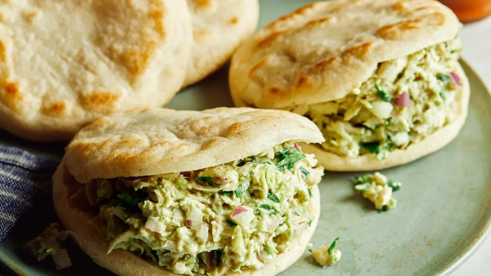

Reina Pepiada

Home
Description
A Reina Pepiada is a classic Venezuelan arepa stuffed with a creamy, savory salad made from shredded chicken, ripe avocados, mayonnaise, and seasonings like onion, garlic, lime juice, and cilantro.
Ingredients
For the Arepas:
- 2 cups pre-cooked white cornmeal (such as P.A.N. Masarepa)
- 2 to 2 1/2 cups of warm water
- 1 tsp salt
- 1-2 tsp vegetable oil or olive oil (plus extra for the pan)
For the filling:
- 2 cups cooked chicken breast, shredded
- 2 ripe avocados (mashed or finely diced)
- 1/3 cup of mayonnaise
- 1/2 small yellow or red onion, finely diced
- 1-2 tbsp fresh lime juice
- 2 tbsp fresh cilantro (coriander), chopped
- Salt and black pepper
Instructions
- Make the arepa dough:
- In a large bowl, combine the pre-cooked cornmeal and salt.
- Gradually pour in the warm water and a teaspoon of oil. Stir with your hands or a spoon, then let it rest for about 5 minutes so the cornmeal absorbs the liquid.
- Knead the dough gently for 2 to 3 minutes until it is smooth, soft, and pliable (it should not crack around the edges or stick to your hands).
- Shape and cook the arepas:
- Divide the dough into 6 equal portions. Roll each portion into a ball, then flatten it into a thick disc (about 1/2 inch thick).
- Heat a lightly oiled skillet, griddle, or cast-iron pan over medium heat.
- Cook the arepas for 5 to 7 minutes per side until golden brown with light char spots.
- (Optional)Transfer them to a 350°F (175°C) oven for 10 minutes to make sure they cook completely through and sound hollow when tapped.
- Remove from heat and let them cool a couple minutes.
- Prepare the Reina Pepiada filling:
- In a medium bowl, mash the ripe avocados with a fork until mostly smooth or slightly chunky, depending on your preference.
- Add the mayonnaise, lime juice, finely diced onion, and chopped cilantro. Mix well.
- Fold in the shredded chicken until thoroughly coated. Season with salt and black pepper to taste.
- Assemble:
- Use a knife to slice open each warm arepa halfway across the edge (like a pita pocket).
- Stuff each arepa generously with the chicken avocado salad.